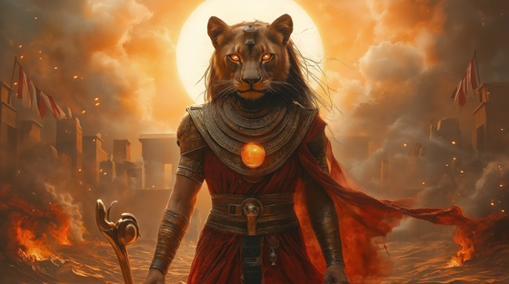

Feel the firestorm of Sekhmet with this blistering death/thrash metal anthem, forged in the breath of gods and sharpened in battle. She is not merely wrath — she is divine retribution wrapped in a lioness roar.
Who is Sekhmet?
Sekhmet is the lion-headed goddess of war, destruction, plague, and divine justice. Born from the eye of Ra, she was unleashed upon mankind when they turned from the gods. Her fury nearly wiped out humanity until she was pacified by trickery and wine dyed to look like blood.
Despite her destruction, she is also a healer, often invoked in medicine and magic. Her name means “She Who Is Powerful.” She embodies the duality of fierce vengeance and sacred restoration.
Sekhmet: Flame of Wrath
Summoned by the breath of kings
I rose with fire in my wings
The sun ignites behind my eyes
I hunt the ones who craft their lies
Blood in sand, their screams divine
The taste of war, the sacred sign
I am the cure, I am disease
A lion’s roar that does not cease
My name is burned into the stone
Where wrath was born and mercy’s gone
I am Sekhmet — flame and fang
Where gods decree, I let it hang
No prayers will shield you from my path
I am the roar, the sun, the wrath
Burning bright in solar breath
I am the goddess sent as death
The pharaoh calls, and I obey
To purge the world and clear the way
No tears I shed, no pity held
For justice drinks the blood I’ve spilled
I walk in storms, I howl in flame
My fury wears a thousand names
Yet in my heart, the balance burns
And order waits until it turns
My name is burned into the stone
Where wrath was born and mercy’s gone
I am Sekhmet — flame and fang
Where gods decree, I let it hang
No prayers will shield you from my path
I am the roar, the sun, the wrath
Burning bright in solar breath
I am the goddess sent as death
I do not hate — I only serve
The flame that follows what they deserve
And when the Nile runs red again
My fury sings from lion’s den
But still I heal when rage is done
The sister side of Ra, the sun
The fire that kills, the fire that mends
The force that breaks, the one that ends
My name is burned into the stone
Where wrath was born and mercy’s gone
I am Sekhmet — flame and fang
Where gods decree, I let it hang
No prayers will shield you from my path
I am the roar, the sun, the wrath
Burning bright in solar breath
I am the goddess sent as death
A thousand slain, a thousand spared
One roar, and gods are unprepared
Call me plague or call me queen
I am the fire that haunts your dreams
In temples scorched and silent ground
Where justice sleeps, I still resound
I am Sekhmet — hear my breath
The goddess born to balance death